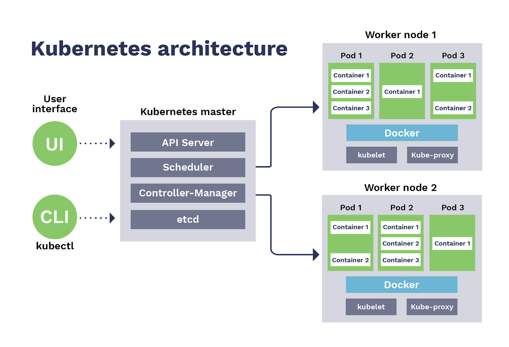

我们这里介绍的是 Kubernetes 集群的最小安装(一个 Master/两个 Node)

1. 操作系统初始化
系统的初始化操作主要是为为了让集群更新稳定且好用
- [1] 设置系统主机名以及 Host 文件各节点之间的相互解析
# 节点临时设置主机名的方式
$ sudo hostnamectl set-hostname k8s-master01
$ sudo hostnamectl set-hostname k8s-node01
$ sudo hostnamectl set-hostname k8s-node02
# 修改各节点的hosts文件
$ sudo cat /etc/hosts
192.168.3.20 k8s-master01
192.168.3.21 k8s-node01
192.168.3.22 k8s-node02
- [2] 配置阿里源来加速安装速度
# 备份当前源
$ sudo mv /etc/yum.repos.d/CentOS-Base.repo /etc/yum.repos.d/CentOS-Base.repo.backup
# 下载新的CentOS-Base.repo到/etc/yum.repos.d/
$ sudo wget -O /etc/yum.repos.d/CentOS-Base.repo http://mirrors.aliyun.com/repo/Centos-7.repo
# 生成缓存
$ sudo yum makecache
- [3] 安装相关软件依赖包
$ sudo yum install -y \
conntrack ntpdate ntp ipvsadm ipset jq iptables \
curl sysstat libseccomp wget vim net-tools git
- [4] 设置防火墙为 Iptables 并清空规则
# 禁用firewalld防火墙
$ sudo systemctl stop firewalld
$ sudo systemctl disable firewalld
# Iptables服务配置
$ sudo yum -y install iptables-services
$ sudo systemctl start iptables && systemctl enable iptables
$ sudo iptables -F && sudo service iptables save
- [5] 关闭 SELINUX 服务
# 关闭swap分区并且设置永久关闭
# 关闭swap分区可以增强Kubernetes中pod的效率
$ sudo swapoff -a
$ sudo sed -i '/ swap / s/^\(.*\)$/#\1/g' /etc/fstab
# 关闭SELINUX服务
$ sudo setenforce 0
$ sudo sed -i 's/^SELINUX=.*/SELINUX=disabled/' /etc/selinux/config
- [6] 为 K8S 来调整内核参数
# 设置内核参数文件
$ cat > kubernetes.conf <<EOF
net.bridge.bridge-nf-call-iptables=1 # 必须; 开启网桥模式
net.bridge.bridge-nf-call-ip6tables=1 # 必须; 开启网桥模式
net.ipv4.ip_forward=1
net.ipv4.tcp_tw_recycle=0
vm.swappiness=0 # 禁止使用swap空间; 只有当系统OOM时才允许使用它
vm.overcommit_memory=1 # 不检查物理内存是否够用
vm.panic_on_oom=0 # 开启OOM
fs.inotify.max_user_instances=8192
fs.inotify.max_user_watches=1048576
fs.file-max=52706963 # 设置文件句柄数量
fs.nr_open=52706963 # 设置文件的最大打开数量
net.ipv6.conf.all.disable_ipv6=1 # 必须; 关闭IPv6协议
net.netfilter.nf_conntrack_max=2310720
EOF
# 生效配置
$ sudo cp kubernetes.conf /etc/sysctl.d/kubernetes.conf
$ sudo sysctl -p /etc/sysctl.d/kubernetes.conf
- [7] 调整系统时区
# 设置系统时区为中国/上海
$ sudo timedatectl set-timezone Asia/Shanghai
# 将当前的UTC时间写入硬件时钟
$ sudo timedatectl set-local-rtc 0
# 重启依赖于系统时间的服务
$ sudo systemctl restart rsyslog && sudo systemctl restart crond
- [8] 关闭系统不需要服务
$ sudo systemctl stop postfix
$ sudo systemctl disable postfix
- [9] 关闭 rsyslogd 服务和开启 systemd journald 服务
# 创建持久化保存日志的目录
$ sudo mkdir /var/log/journal
$ sudo mkdir /etc/systemd/journald.conf.d
$ sudo cat > /etc/systemd/journald.conf.d/99-prophet.conf <<EOF
[Journal]
# 持久化保存到磁盘
Storage=persistent
# 压缩历史日志
Compress=yes
SyncIntervalSec=5m
RateLimitInterval=30s
RateLimitBurst= 1000
# 最大占用空间 10G
SystemMaxUse=10G
# 单日志文件最大 200M
SystemMaxFileSize=200M
# 日志保存时间 2 周
MaxRetentionSec=2week
# 不将日志转发到 syslog
ForwardToSyslog=no
EOF
# 重启日志系统
$ sudo systemctl restart systemd-journald
- [10] 升级系统内核为 4.x 版本
# 安装Elrepo源
# 因为CentOS7自带的内核版本为3.10.x的系列，可能会导致运行k8s有bug
$ sudo rpm -Uvh http://www.elrepo.org/elrepo-release-7.0-3.el7.elrepo.noarch.rpm
# 安装完成后检查/boot/grub2/grub.cfg中
# 对应内核menuentry中是否包含initrd16配置，如果没有再安装一次
$ sudo yum --enablerepo=elrepo-kernel install -y kernel-lt
# 设置开机从新内核启动
$ sudo grub2-set-default 'CentOS Linux (4.4.189-1.el7.elrepo.x86_64) 7 (Core)'
2. 安装 Docker 服务
具体安装步骤其实参考官网的安装步骤即可
- [1] kube-proxy 开启 ipvs 的配置
# 加载内核对应模块
$ sudo modprobe br_netfilter
# 写对应配置模块脚本
$ sudo cat > /etc/sysconfig/modules/ipvs.modules <<EOF
#!/bin/bash
modprobe -- ip_vs
modprobe -- ip_vs_rr
modprobe -- ip_vs_wrr
modprobe -- ip_vs_sh
EOF
# 引导ipvs相关依赖模块加载
$ sudo chmod 755 /etc/sysconfig/modules/ipvs.modules
$ sudo bash /etc/sysconfig/modules/ipvs.modules
$ sudo lsmod | grep -e ip_vs -e nf_conntrack_ipv
- [2] 安装 Docker 软件及其配置
# 安装相关驱动
$ sudo yum install -y yum-utils device-mapper-persistent-data lvm
# 添加docker源
$ sudo yum-config-manager \
--add-repo \
http://mirrors.aliyun.com/docker-ce/linux/centos/docker-ce.repo
# 安装docker服务
$ sudo yum update -y
$ sudo yum install -y docker-ce
# 创建对应目录
$ sudo mkdir /etc/docker
$ sudo mkdir -p /etc/systemd/system/docker.service.d
# 编写配置daemon文件
$ sudo cat > /etc/docker/daemon.json <<EOF
{
"exec-opts": ["native.cgroupdriver=systemd"],
"log-driver": "json-file",
"log-opts": {
"max-size": "100m"
}
}
EOF
# 重启docker服务
$ sudo systemctl daemon-reload
$ sudo systemctl restart docker
$ sudo systemctl enable docker
3. 安装 Kubeadm 工具
Kubeadm - 主从配置
- [1] 配置阿里源的 Kubernetes 仓库
$ sudo cat <<EOF > /etc/yum.repos.d/kubernetes.repo
[kubernetes]
name=Kubernetes
baseurl=https://mirrors.aliyun.com/kubernetes/yum/repos/kubernetes-el7-x86_64/
enabled=1
gpgcheck=1
repo_gpgcheck=1
gpgkey=https://mirrors.aliyun.com/kubernetes/yum/doc/yum-key.gpg https://mirrors.aliyun.com/kubernetes/yum/doc/rpm-package-key.gpg
EOF
- [2] 安装相关工具
# 因为kubelet需要和容器接口进行交互来启动容器，而我们的k8s通过
# kubeadm安装之后，都是以Pod的方式存在，即底层都是已容器的方式运行
# 所以需要设置开机自启动，不然的话重启之后k8s不会自动启动的
$ sudo yum -y install kubeadm-1.15.1 kubectl-1.15.1 kubelet-1.15.1
$ sudo systemctl enable kubelet.service
4. 安装 Kubernetes 集群
实验环境：一个主节点和两个子节点的集群系统
- [1] 初始化主节点
# kubeadm初始化我们的Kubernetes集群会从google的GCE下来对应镜像
# 因为国情下载的镜像比较大且速度慢，建议先下载之后导入再安装为最佳方式
kubeadm-basic.images.tar.gz
# 下面命令用于获取默认的初始化模板
# 根据我们配置的实际情况，需要修改对应IP等参数
$ sudo kubeadm config print init-defaults > kubeadm-config.yaml
# 需要修改的如下所示
# 默认的Flannel插件的网络地址就是10.244网段
localAPIEndpoint:
advertiseAddress: 192.168.2.20
kubernetesVersion: v1.15.1
networking:
podSubnet: "10.244.0.0/16"
serviceSubnet: 10.96.0.0/
---
apiVersion: kubeproxy.config.k8s.io/v1alpha1
kind: KubeProxyConfiguration
featureGates:
SupportIPVSProxyMode: true
mode: ipvs
# 初始化安装并自动颁发证书
$ sudo kubeadm init \
--config=kubeadm-config.yaml \
--ignore-preflight-errors all \
--experimental-upload-certs | tee kubeadm-init.log
# 执行后续输出命令
$ mkdir -p $HOME/.kube # 报错连接配置
$ sudo cp -i /etc/kubernetes/admin.conf $HOME/.kube/config # 管理员配置文件
$ sudo chown $(id -u):$(id -g) $HOME/.kube/config # 授权
# 如果没有科学上网的话，会卡在这一步很久来下载镜像内容
[preflight] Pulling images required for setting up a Kubernetes cluster
[preflight] This might take a minute or two, depending on the speed of your internet connection
[preflight] You can also perform this action in beforehand using 'kubeadm config images pull'
# 对应配置文件的地址和证书(HTTPS)
[kubelet-start] Writing kubelet environment file with flags to file "/var/lib/kubelet/kubeadm-flags.env"
[kubelet-start] Writing kubelet configuration to file "/var/lib/kubelet/config.yaml"
[kubelet-start] Activating the kubelet service
[certs] Using certificateDir folder "/etc/kubernetes/pki"
[certs] Generating "etcd/ca" certificate and key
[certs] Generating "etcd/peer" certificate and key
# SVC默认的域名访问 => kubernetes.default.svc.cluster.local
[certs] apiserver serving cert is signed for DNS names [k8s-master01 kubernetes kubernetes.default kubernetes.default.svc kubernetes.default.svc.cluster.local] and IPs [10.96.0.1 192.168.3.20]
# 最后输出的初始化信息
Your Kubernetes control-plane has initialized successfully!
To start using your cluster, you need to run the following as a regular user:
mkdir -p $HOME/.kube
sudo cp -i /etc/kubernetes/admin.conf $HOME/.kube/config
sudo chown $(id -u):$(id -g) $HOME/.kube/config
You should now deploy a pod network to the cluster.
Run "kubectl apply -f [podnetwork].yaml" with one of the options listed at:
https://kubernetes.io/docs/concepts/cluster-administration/addons/
Then you can join any number of worker nodes by running the following on each as root:
kubeadm join 192.168.3.20:6443 \
--token abcdef.0123456789abcdef \
--discovery-token-ca-cert-hash \
sha256:ec287ef3841056d176d09a5c8584de8e24f0b1caa8083d167eacab13c4e17644
- [2] 部署 flannel 网络
# 安装flannel网络
$ sudo kubectl apply -f \
https://raw.githubusercontent.com/coreos/flannel/master/Documentation/kube-flannel.yml
# 可以通过如下命令查看到对应网络信息
$ sudo kubectl get pod -n kube-system
NAME READY STATUS RESTARTS AGE
coredns-5c98db65d4-j5tkq 1/1 Running 0 16m
coredns-5c98db65d4-ss7d2 1/1 Running 0 16m
etcd-k8s-master01 1/1 Running 0 15m
......
# 之后我们可以在网卡上面看到一个flannel.1的网卡
$ sudo ifconfig
flannel.1: flags=4163<UP,BROADCAST,RUNNING,MULTICAST> mtu 1450
inet 10.244.0.0 netmask 255.255.255.255 broadcast 0.0.0.0
ether aa:73:d7:d0:d1:2a txqueuelen 0 (Ethernet)
RX packets 0 bytes 0 (0.0 B)
RX errors 0 dropped 0 overruns 0 frame 0
TX packets 0 bytes 0 (0.0 B)
TX errors 0 dropped 0 overruns 0 carrier 0 collisions 0
# 查看主节点已经正常了
$ sudo kubectl get nodes
NAME STATUS ROLES AGE VERSION
k8s-master01 Ready master 17m v1.16.2
- [3] 加入主节点以及其余工作节点
# 192.168.3.21
$ sudo kubeadm join 192.168.3.20:6443 \
--token abcdef.0123456789abcdef \
--discovery-token-ca-cert-hash \
sha256:ec287ef3841056d176d09a5c8584de8e24f0b1caa8083d167eacab13c4e17644
# 192.168.3.22
$ sudo kubeadm join 192.168.3.20:6443 \
--token abcdef.0123456789abcdef \
--discovery-token-ca-cert-hash \
sha256:ec287ef3841056d176d09a5c8584de8e24f0b1caa8083d167eacab13c4e17644
# 动态监控
$ sudo kubectl get pod -n kube-system -w
$ sudo kubectl get pods --all-namespaces -o wide
# 集群安装成功
$ sudo kubectl get nodes
- [4] 拆卸集群
# 首先处理各节点
kubectl drain <node name> --delete-local-data --force --ignore-daemonsets
kubectl delete node <node name>
# 执行如下命令来重置集群
kubeadm reset
5. 安装 Dashboard 插件
对 k8s 不了解的同学，可能感觉界面更亲切点！
- [1] 防火墙配置
# 如果ping其他node不通的话，需要手动设置策略
$ sudo iptables -P FORWARD ACCEPT
# 将如下命令写入/etc/rc.local文件防止节点重启之后被还原
$ sleep 60 && /sbin/iptables -P FORWARD ACCEPT
# 重启docker服务
$ sudo systemctl restart docker
- [2] 安装 dashboard 插件
# 官网地址
https://github.com/kubernetes/dashboard
# 为了避免科学上网
# 这里直接通过国内的阿里镜像拉取并通过tag更改名称
$ sudo docker pull \
registry.cn-qingdao.aliyuncs.com/wangxiaoke/kubernetes-dashboard-amd64:v1.10.1
$ sudo docker tag \
registry.cn-qingdao.aliyuncs.com/wangxiaoke/kubernetes-dashboard-amd64:v1.10.1 \
k8s.gcr.io/kubernetes-dashboard-amd64:v1.10.0
$ sudo docker image rm \
registry.cn-qingdao.aliyuncs.com/wangxiaoke/kubernetes-dashboard-amd64:v1.10.1
# 下载和修改kubernetest-dashboard配置文件
$ sudo https://raw.githubusercontent.com/kubernetes/dashboard/v1.10.1/src/deploy/recommended/kubernetes-dashboard.yaml
# master节点安装dashboard插件
$ sudo kubectl apply -f kubernetes-dashboard.yaml
# 查看dashboard的详细信息
$ sudo kubectl get pods -n kube-system -o wide
# 查看dashboard的外网暴露端口
$ sudo kubectl get service --namespace=kube-system
NAME TYPE CLUSTER-IP EXTERNAL-IP PORT(S) AGE
kube-dns ClusterIP 10.96.0.10 <none> 53/UDP,53/TCP 5h38m
kubernetes-dashboard NodePort 10.99.242.186 <none> 443:31234/TCP 14
- [3] 生成 token 令牌认证登录
# 创建serviceaccount
$ sudo kubectl create serviceaccount dashboard-admin -n kube-system
# 把serviceaccount绑定在clusteradmin
# 授权serviceaccount用户具有整个集群的访问管理权限
$ sudo kubectl create clusterrolebinding \
dashboard-cluster-admin --clusterrole=cluster-admin \
--serviceaccount=kube-system:dashboard-admin
# 获取serviceaccount的secret信息，可得到token令牌的信息
$ sudo kubectl get secret -n kube-system
# 通过上边命令获取到dashboard-admin-token-slfcr信息
$ sudo kubectl describe secret <dashboard-admin-token-slfcr> -n kube-system
# 浏览器访问登录并把token粘贴进去登录即可
https://192.168.3.20:31234
# 快捷查看token的命令
$ sudo kubectl describe secrets -n kube-system \
$(kubectl -n kube-system get secret | awk '/admin/{print $1}')

6. 安装遇到问题汇总
好记性，不如烂笔头
- [1] 主节点初始化报错
# 报错内容
[WARNING SystemVerification]: this Docker version is not on the list of validated versions: 19.03.4. Latest validated version: 18.09
error execution phase preflight: [preflight] Some fatal errors occurred:
[ERROR FileAvailable--etc-kubernetes-bootstrap-kubelet.conf]: /etc/kubernetes/bootstrap-kubelet.conf already exists
[ERROR FileAvailable--etc-kubernetes-pki-ca.crt]: /etc/kubernetes/pki/ca.crt already exists
[preflight] If you know what you are doing, you can make a check non-fatal with `--ignore-preflight-errors=...`
# 处理方法 - 加入如下参数
kubeadm init --ignore-preflight-errors all xxx